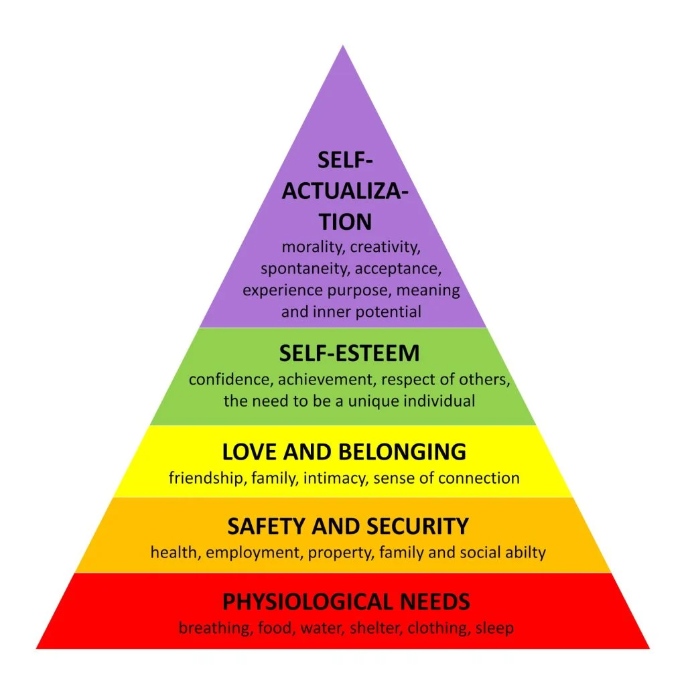
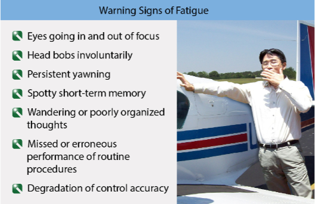
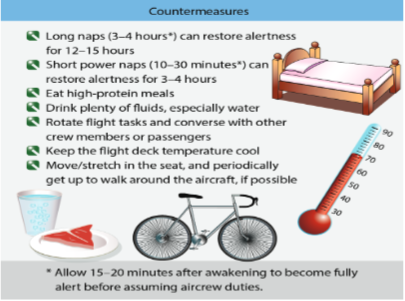

References:
Objectives:
The learner should develop knowledge of the elements related to human behavior and effective communication as required in the Instructor ACS.
Elements:
- Elements of Human Behavior
- Learner Emotional Reactions
- Teaching the Adult Learner
- Effective Communication
- RM Recognizing & Accommodating Human Behavior
Completion Standards
The learner will understand the 3 basic elements of the communicative process, recognize the various barriers to communication, and develop communication skills to convey the desired information to future learners.
Elements of Human Behavior
Human Behavior
The study of Human Behavior is an attempt to explain how and why humans function the way they do.
Multiple theories and definitions:
-
Scientific World:
Product of factors that cause people to act predictably -
Satisfying Needs:
Behavior is result of attempts to satisfy needs -
Life Course of Humans:
As humans grow, behaviors change
Personality type classifications try to explain that seeming random variation in human behavior is quite structured due to differences in way individuals prefer to use their perception & judgment Ex: Myers Briggs Type Indicator
Instructor must understand their style of teaching and as much as possible adapt to learners
The instructor’s challenge is to know what controls are best for existing circumstances Create an atmosphere that enables / encourages learners to help themselves toward their goals It is the instructor’s responsibility to discover how to realize the potential in each learner
Human Behavior
A working knowledge of behavior can help an instructor better understand a learner
Motivations:
Motivations are the reason one acts or behaves in a certain way and lies at the heart of goals. Probably the dominant force governing progress and ability to learn
Positive Motivations
- Typically the most successful method
- Promise or achievement of awards (personal, social, financial, satisfaction of self, recognition)
- Secure, pleasant conditions, a safe environment
- Tangible return for efforts
- Group approval/belonging
- Favorable self-image
- Promise or achievement of awards (personal, social, financial, satisfaction of self, recognition)
Maintaining Motivation
Maintaining motivation can be difficult in the long term. Common methods that an instructor can use to help maintain the motivation of their students include:
Rewarding Success
Praise incremental successes and relate accomplishments to lesson objectives
Present New Challenges
Drops in Motivation are natural, especially after the initial excitement wears off. It is important to remind learners of their goals and reasons for training and that plateaus are normal
Human Needs
Human Needs can be organized into levels of importance. This is typically referred to as the Hierarchy of Human Needs Until the needs are satisfied, one can’t focus fully on learning, self-expression, or any other task Once a need is satisfied, it no longer provides motivation
Hierarchy of Human Needs:
- Physiological Biological needs Food, rest, and protection from the elements
- Security Protection against danger, threats, deprivation affect learner behavior
- Belonging Belong, to associate, and to give and receive friendship and love
- Esteem Internal Relating to self-esteem: confidence, independence, achievement, competence, knowledge External Relating to reputation: status, recognition, appreciation, and respect of associates
- Cognitive and Aesthetic Cognitive: Need to know and understand If a person understands, they can control the situation and make informed decisions Aesthetic: Emotional needs If an instructor does not like a learner, this feeling may affect the instructor’s ability to teach
- Self-Actualization When all other needs are satisfied, only then can self-actualization be attained Realizing one’s own potential for continued development and reaching personal goals and potential
Human Needs
Help learners satisfy their own needs in a manner that will create a healthy learning environment

Defense Mechanisms
Subconscious, almost automatic, ego-protecting reactions to unpleasant situations Used to soften feelings of failure, to alleviate feelings of guilt, and to protect personal worth
There are 8 typical defense mechanisms:
Refusal to accept a reality because it is too threatening
Uncomfortable thoughts are placed in inaccessible areas of the unconscious mind
Unconscious shift in emotion from the original object to a less threatening substitute
Subconscious technique for justifying actions that otherwise would be unacceptable
- When true rationalization takes place, individuals sincerely believe in their excuses.
Daydreaming about how things should be rather than doing something about how they are
Disguising the presence of a weak quality by emphasizing a more positive one
- May develop a less preferred / more attainable goal instead of one more preferred / less attainable
Blame is relegated to others for their own shortcomings, mistakes, and transgressions
Protect from dangerous desires by developing opposite attitudes / behaviors
Learner Emotional Reactions
Typical emotional reactions from learners are important to understand and recognize in the student.
Anxiety – “A state of mental uneasiness arising from fear…”
- Most significant psychological factor affecting flight instruction
- Anxiety can be countered by reinforcing enjoyment of flying, and by teaching to cope with fear
Impatience
- Seeks only the ultimate objective without considering the means to reach it
- Present training one step at a time, with clear goals for each step. Tailor instruction to learner‘s pace
Worry or Lack of Interest
- Those worried or emotionally upset are not ready to learn and derive little benefit from instruction
- Divert attention from their worries and troubles to the tasks at hand
- Ensure the learner knows exactly how well they have progressed and what deficiencies are present
Physical Discomfort, Illness, Fatigue, and Dehydration
- Slow the rate of learning, and should be mitigated to the extent possible
Fatigue
One of the most dangerous hazards to flight safety. Impairs judgement / decision making
Acute Fatigue:
Normal occurrence of everyday living
Chronic Fatigue:
Combination of physiological / psychological problems (financial, home, etc.)


Dehydration and Heatstroke
Dehydration:
Critical loss of water to the body. Reduces alertness
Heatstroke
Inability of the body to control its temperature
- Carry ample water on any long flight, keep the temperature cool, and wear light clothing
Apathy Due to Inadequate Instruction
- Provide well-planned, appropriate, and accurate instruction
- Instruction should be meaningful. Teach to the level of the learner
- Once the instructor loses confidence, it is difficult to regain, and learning is diminished
Stress
Stress is a natural human response to a difficult situation that causes mental tension or worry. It is usually triggered when someone feels threatened or under pressure, and they don’t feel they can control the situation.
Normal Reactions to Stress
People respond rapidly and exactly, within the limits of their experience and training
- This is desired, stress should not overwhelm and cause abnormal reactions (below)
Abnormal Reactions to Stress
Response may be random, illogical, completely absent, or at least inadequate
- Over-cooperation, extreme self-control, inappropriate laughter or singing, rapid emotion changes
Flight Instructors Actions Regarding Seriously Abnormal Learners
- Refrain from instructing the learner and assure they don’t continue training or become certificated
- Arrange for another instructor to conduct an evaluation flight. After the flight, the instructors should confer to determine whether they agree that further investigation or action is justified
Teaching the Adult Learner
Flight students tend to be older (~30+)
- Learning is a means to an end (generally have a use for the knowledge/skill)
- Seek out learning experiences to cope with specific life changing events (marriage, new job, etc.)
- Autonomous & self-directed; need to be independent & exercise control
- Draw from foundation of life experience and knowledge for learning
- Goal & relevancy oriented
- Practical, focusing on aspects of a lesson most useful to them in their work
- Need to be shown respect
- Need to increase or maintain a sense of self-esteem is a strong secondary motivator
- Want to solve problems & apply new knowledge immediately
To effectively teach the adult learner:
- Clarify and articulate learner expectations early
- Provide an organized training syllabus with clearly defined objectives
- Recognize the learner’s need to control pace and start/stop time
- Use scenario-based training (takes advantage of preference to self-direct)
- Help learners integrate new ideas with what they already know
- Provide self-directed learning involving other people as resources, guides, etc. (don’t isolate)
- Use books, programmed instruction and computers which are popular with adults
- Refrain from “spoon-feeding”
- Set a cooperative learning climate
- Create opportunities for mutual planning
Effective Communication
Communication doesn’t occur automatically, and a communication style must be developed that can convey info to learners.
Communication
Communication takes place when a person transmits ideas / feelings to another. The effectiveness of communication is measured by the similarity between the idea transmitted and the idea received
A change in behavior is the goal of communication
There are 3 elements of communication
The Source → The Instructor
Effectiveness as a communicator is related to 3 basic factors: Ability to select/use language is essential for transmitting information Communicators reveal information about themselves Material is accurate, up-to-date, and stimulating
The Symbols → Words or symbols used to transmit info
Determine the symbols best to start / end and those best for explaining, clarifying, emphasizing Determine which medium is best suited for transmission (hearing, seeing, touch) Monitor the feedback from a learner as symbols may need to be modified for clarity Learners need feedback on how they are doing Negative feedback in private only
The Receiver → The Learner
With effective communication, the receivers react with understanding and change their behavior accordingly. It is critical to remember that not all learners learn in the same way, and using multiple approaches is most effective
Risk Management: Barriers to Effective Communication
Lack of Common Experience:
The greatest single barrier to effective communication. It is is essential that instructors speak the same language as the learners. When specific terminology is needed, ensure understanding, don’t just assume understanding.
Confusion Between the Symbol and the Symbolized Object:
This occurs when the meaning or intent of words and/or the context isn’t clear (ex. Sarcasm)
Overuse of Abstractions:
Abstractions are words that are general rather than specific, and they may not evoke the same items of experience in the learner’s minds
External Factors:
Factors outside the instructor’s control that prevent an activity from being carried out properly. There are multiple types of external factors.
- Physiological interference - physical problem inhibiting understanding (injury, hearing loss, etc.)
- Environmental interference - caused by external physical conditions (like noise)
- Psychological interference - product of how the learner / instructor feel
Interference:
This occurs when the message gets disrupted or truncated. Ensure the learner understands the message
Developing Communication Skills
Because communication is a skill, it must be practiced and developed. There are multiple ways of developing communication skills:
Role Playing
Practice instructing to develop communication skills, techniques, etc.
Instructional Communication
Know the topic well; Do not be afraid to use examples of past experience to illustrate points Determine the level of understanding by some sort of evaluation
Listening
Listen to understand rather than refute
Questioning
Good questioning can determine how well a learner understands Ask open ended and focused questions Paraphrasing and perception checking can confirm understanding
Instructional Enhancement
The deeper the knowledge about an area, the better the instructor is at conveying it
Risk Management: Recognizing & Accommodating Human Behavior
- Working knowledge of Human Behavior can help an instructor better understand a learner, which leads to successful instruction
- Understand and adjust for different personalities, motivators, learning styles, etc.